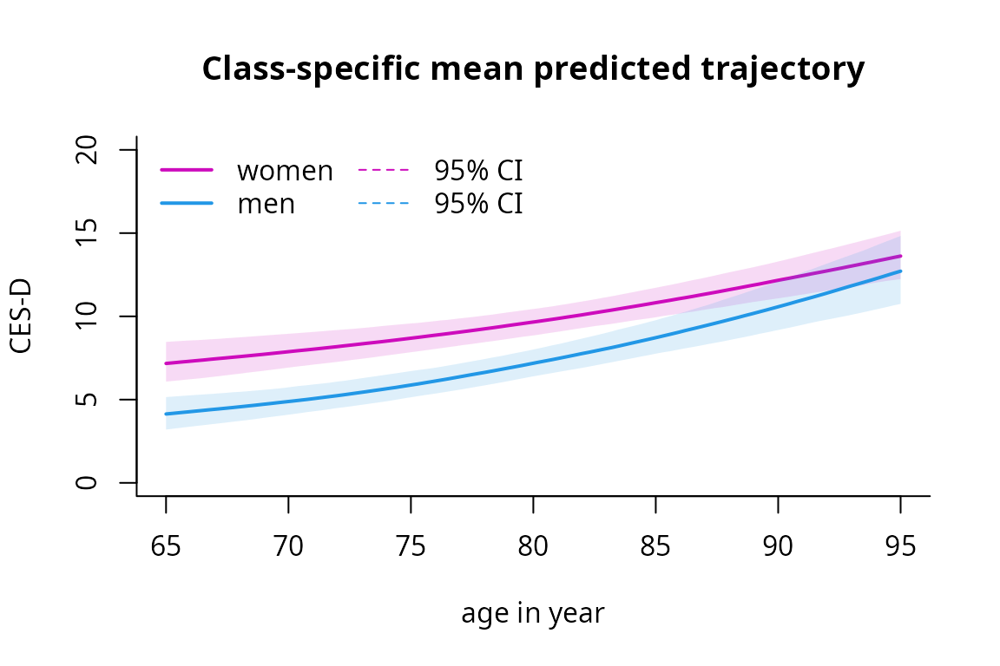
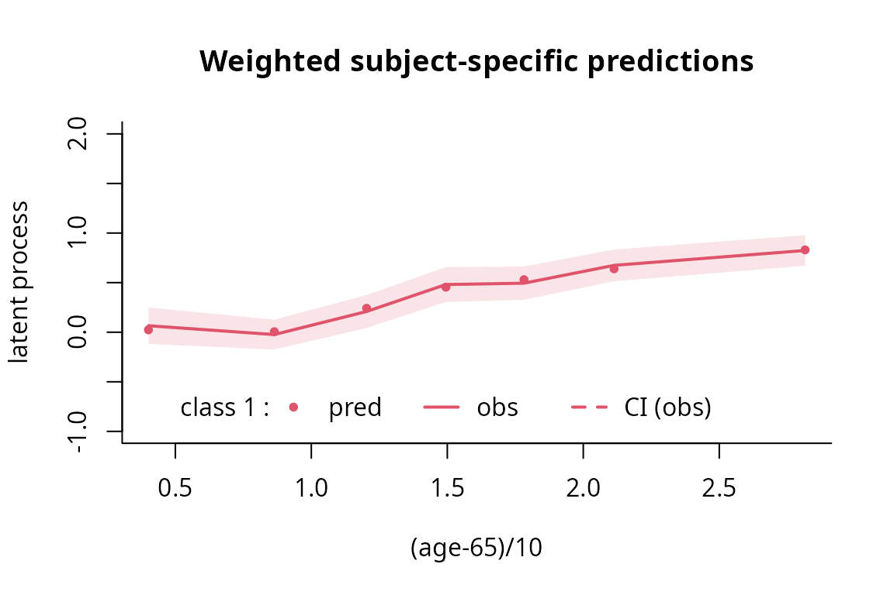

How to estimate a latent process mixed model using lcmm function
Source:vignettes/latent_process_model_with_lcmm.Rmd
latent_process_model_with_lcmm.Rmd
Background on the model
Each dynamic phenomenon can be characterized by a latent process \((\Lambda(t))\) which evolves in continuous time \(t\). When modeling repeated measures of marker, we usually don’t think of it as a latent process measured with error. Yet, this is the underlying assumption made by the mixed model theory. Function lcmm exploits this framework to extend the linear mixed model theory to any type of outcome (ordinal, binary, continuous with any distribution).
The latent process mixed model
The latent process mixed model is introduced in Proust-Lima et al. (2006 - https://doi.org/10.1111/j.1541-0420.2006.00573.x and 2013 - https://doi.org/10.1111/bmsp.12000 ).
The quantity of interest defined as a latent process is modeled according to time using a linear mixed model:
\[\Lambda(t) = X(t) \beta + Z(t)u_i +w_i(t)\]
where:
- \(X(t)\) and \(Z(t)\) are vectors of covariates (\(Z(t)\) is included in \(X(t)\));
- \(\beta\) are the fixed effects (i.e., population mean effects);
- \(u_i\) are the random effects (i.e., individual effects); they are distributed according to a zero-mean multivariate normal distribution with covariance matrix \(B\);
- \((w_i(t))\) is a Gaussian process that might be added in the model to relax the intra-subject correlation structure.
The relationship between the latent process of interest and the observations of the marker \(Y_{ij}\) (for subject \(i\) and occasion \(j\)) is simultaneously defined in an equation of observation:
\[Y_{ij} = H( ~ \Lambda(t_{ij})+\epsilon_{ij} ~ ; \eta)\]
where:
- \(t_{ij}\) is the time of measurement for subject \(i\) and occasion \(j\);
- \(\epsilon_{ij}\) is an independent zero-mean Gaussian error;
- \(H\) is the link function (parameterized by \(\eta\)) that transforms the latent process into the scale and metric of the marker.
Different parametric families are used. When the marker is continuous, \(H^{-1}\) is a parametric family of increasing monotonic functions among:
- the linear transformation: this reduces to the linear mixed model (2 parameters)
- the Beta cumulative distribution family rescaled (4 parameters)
- the basis of quadratic I-splines with m knots (m+2 parameters)
When the marker is discrete (binary or ordinal): \(H\) is a threshold function, that is each level of Y corresponds to an interval of \(\Lambda(t_{ij})+\epsilon_{ij}\) which boundaries are to be estimated.
Example with CES-D
In this vignette, the latent process mixed models implemented in lcmm are illustrated by the study of the linear trajectory of depressive symptoms (as measured by CES-D scale) according to \(age65\) and adjusted for male. Correlated random effects for the intercept and \(age65\) are included.
Model considered:
\[CESD_{ij} = H(~ \beta_{1}age65_{ij}+\beta_{2}male_{i}+\beta_{3}age65_{ij}male_{i} +u_{0i}+u_{1i}age65_{ij}+\epsilon_{ij} ~ ; ~ \eta)\]
Where : \(u_{i} \sim \mathcal{N}(0,B)\) and \(\epsilon_{ij} \sim \mathcal{N}(0,1)\)
The Fixed part is \(\beta_{1}age65_{ij}+\beta_{2}male_{i}+\beta_{3}age65_{ij}male_{i}\) ; the random part is \(u_{0i}+u_{1i}age65_{ij}\).
Estimate the model for different continuous link functions \(H\)
We use the age variable recentered around 65 years old and in decades:
The latent process mixed model can be fitted with different link functions as shown below. This is done with argument link.
Linear link function
When defining the linear link function, the model reduces to a standard linear mixed model. The model can be fitted with lcmm function (with the linear link function by default):
mlin <- lcmm(CESD ~ age65*male, random=~ age65, subject='ID', data=paquid) #link= linearIt is the exact same model as one fitted by hlme. The only difference with a hlme object is the parameterization for the intercept and the residual standard error that are considered as rescaling parameters.
mlin2 <- hlme(CESD ~ age65*male, random=~ age65, subject='ID', data=paquid) #link= linearThe log likelihood are the same but the estimated parameters \(\beta\) are not in the same scale
mlin$loglik
[1] -7056.652
mlin2$loglik
[1] -7056.652
mlin$best
age65 male age65:male
0.3596478 -0.7416496 0.1647425
varcov 1 varcov 2 varcov 3
1.7524938 -0.3179336 0.1973436
Linear 1 (intercept) Linear 2 (std err)
6.9846122 5.5489605
mlin2$best
intercept age65 male age65:male varcov 1 varcov 2 varcov 3
6.9846116 1.9956717 -4.1153838 0.9141495 53.9609787 -9.7894861 6.0764003
stderr
5.5489602 Nonlinear link function 1: Beta cumulative distribution function
The rescaled cumulative distribution function (CDF) of a Beta distribution provides concave, convex or sigmoïd transformations between the marker and its underlying latent process.
mbeta <- lcmm(CESD ~ age65*male, random=~ age65, subject='ID', data=paquid, link='beta')Nonlinear link function 2: Quadratic I-splines
The family of quadratic I-splines approximates any continuous increasing link function. It involves nodes that are distributed within the range of the marker. By default, 5 equidistant knots located in the marker range are used :
mspl <- lcmm(CESD ~ age65*male, random=~ age65, subject='ID', data=paquid, link='splines')-, then the location is specified with equi, quant or manual for respectively equidistant knots, knots at quantiles of the marker distribution or interior knots entered manually in argument intnodes. For example, 7-equi-splines means I-splines with 7 equidistant nodes, 6-quant-splines means I-splines with 6 nodes located at the quantiles of the marker distribution. The shortcut splines stands for 5-equi-splines.
For an example with 5 knots placed at the quantiles:
mspl5q <- lcmm(CESD ~ age65*male, random=~ age65, subject='ID', data=paquid, link='5-quant-splines')
Select the best model
Objects mlin, mbeta, mspl and mspl5q are latent process mixed models that assume the exact same trajectory for the underlying latent process but different link functions: linear,BetaCDF, I-splines with 5 equidistant knots (default with link=‘splines’) and I-splines with 5 knots at percentiles, respectively. To select the most appropriate link function, one can compare these different models. Usually this is achieved by comparing the models in terms of goodness-of-fit using measures such as AIC or UACV.
The summarytable command gives the AIC (the UACV is in the output of each model):
summarytable(mlin,mbeta,mspl,mspl5q,which = c("loglik", "conv", "npm", "AIC"))
loglik conv npm AIC
mlin -7056.652 1 8 14129.30
mbeta -6306.962 1 10 12633.92
mspl -6509.681 1 13 13045.36
mspl5q -6320.085 1 13 12666.17
In this case, the model with a link function approximated by I-splines with 5 knots placed at the quantiles provides the best fit according to the AIC criterion.
The different estimated link functions can be compared in a plot:
col <- rainbow(5)
plot(mlin, which="linkfunction", bty='l', ylab="CES-D", col=col[1], lwd=2, xlab="underlying latent process")
plot(mbeta, which="linkfunction", add=TRUE, col=col[2], lwd=2)
plot(mspl, which="linkfunction", add=TRUE, col=col[3], lwd=2)
plot(mspl5q, which="linkfunction", add=TRUE, col=col[4], lwd=2)
legend(x="topleft", legend=c("linear", "beta","splines (5equidistant)","splines (5 at quantiles)"), lty=1, col=col, bty="n", lwd=2)
We see that the 2 splines transformations are very close. The linear model does not seem to be appropriate, as shown by the gap betwwen the linear curve and the splines curves. The beta transformation departs from the splines only in the high values of the latent process.
Confidence bands of the transformations can be obtained by the Monte Carlo method :
linkspl5q <- predictlink(mspl5q,ndraws=2000)
plot(linkspl5q, col=col[4], lty=2, shades=TRUE)
legend(x="left", legend=c("95% confidence bands","for splines at quantiles"),lty=c(2,NA), col=c(col[4],NA), bty="n", lwd=1, cex=0.8)
Estimate the model with a discrete link function \(H\)
Sometimes, with markers that have only a restricted number of different levels, continuous link functions are not appropriate and the ordinal nature of the marker has to be handled. lcmm function handles such a case by considering threshold link function. However, one has to know that numerical complexity of the model with threshold link function is much more important (due to a numerical integration over the random effect distribution). This has to be kept in mind when fitting this model and the number of random effects is to be chosen parcimoniously.
Note that this model becomes a cumulative probit mixed model.
Here is an example with \(HIER\) variable (4 levels) as considering a threshold link function for CESD would involve too many parameters given the range in 0-52 (e.g., 52 threshold parameters).
mthresholds <- lcmm(HIER ~ age65*male, random=~ age65, subject='ID', data=paquid, link='thresholds')Postfit outputs
Summary
The summary of the model includes convergence, goodness of fit criteria and estimated parameters.
summary(mspl5q)
General latent class mixed model
fitted by maximum likelihood method
lcmm(fixed = CESD ~ age65 * male, random = ~age65, subject = "ID",
link = "5-quant-splines", data = paquid)
Statistical Model:
Dataset: paquid
Number of subjects: 500
Number of observations: 2104
Number of observations deleted: 146
Number of latent classes: 1
Number of parameters: 13
Link function: Quadratic I-splines with nodes
0 2 6 12 52
Iteration process:
Convergence criteria satisfied
Number of iterations: 19
Convergence criteria: parameters= 1.3e-08
: likelihood= 1.5e-07
: second derivatives= 3.1e-14
Goodness-of-fit statistics:
maximum log-likelihood: -6320.08
AIC: 12666.17
BIC: 12720.96
Discrete posterior log-likelihood: -6309.09
Discrete AIC: 12644.18
Mean discrete AIC per subject: 12.6442
Mean UACV per subject: 12.6439
Mean discrete LL per subject: -12.6182
Maximum Likelihood Estimates:
Fixed effects in the longitudinal model:
coef Se Wald p-value
intercept (not estimated) 0
age65 0.42421 0.06279 6.756 0.00000
male -0.83140 0.19742 -4.211 0.00003
age65:male 0.23371 0.10300 2.269 0.02327
Variance-covariance matrix of the random-effects:
intercept age65
intercept 1.89911
age65 -0.39567 0.1711
Residual standard error (not estimated) = 1
Parameters of the link function:
coef Se Wald p-value
I-splines1 -2.03816 0.13469 -15.132 0.00000
I-splines2 1.04627 0.02461 42.510 0.00000
I-splines3 0.74190 0.03773 19.665 0.00000
I-splines4 0.98399 0.03237 30.400 0.00000
I-splines5 1.55606 0.04480 34.735 0.00000
I-splines6 0.93273 0.16614 5.614 0.00000
I-splines7 1.38790 0.17687 7.847 0.00000Graph of predicted trajectories according to a profile of covariates
The predicted trajectories can be computed in the natural scale of the dependent variable and according to a profile of covariates:
datnew <- data.frame(age=seq(65,95,length=100))
datnew$age65 <- (datnew$age - 65)/10
datnew$male <- 0
women <- predictY(mspl5q, newdata=datnew, var.time="age", draws=TRUE)
datnew$male <- 1
men <- predictY(mspl5q, newdata=datnew, var.time="age", draws=TRUE)
And then plotted:
plot(women, lwd=c(2,1), type="l", col=6, ylim=c(0,20), xlab="age in year",ylab="CES-D",bty="l", legend=NULL, shades = TRUE)
plot(men, add=TRUE, col=4, lwd=c(2,1), shades=TRUE)
legend(x="topleft", bty="n", ncol=2, lty=c(1,1,2,2), col=c(6,4,6,4), legend=c("women","men", "95% CI", "95% CI"), lwd=c(2,2,1,1)) 
Goodness of fit 1: plot of residuals
The subject-specific residuals (qqplot in bottom right panel) should be Gaussian.
plot(mspl5q, cex.main=0.9)
Goodness of fit 2: plot of predictions versus observations
The mean predictions and observations can be plotted according to time. Note that the predictions and observations are in the scale of the latent process (observations are transformed with the estimated link function):
plot(mspl5q, which="fit", var.time="age65", bty="l", xlab="(age-65)/10", break.times=8, ylab="latent process", lwd=2, marg=FALSE, ylim=c(-1,2), shades=TRUE, col=2)
To go further …
heterogeneous profiles of trajectories
The latent process mixed model extends to the heterogeneous case with latent classes. The same strategy as explained with hlme (see vignette ) can be used.
joint analysis of a time to event
The latent process mixed model extends to the case of a joint model. This is done in Jointlcmm and mpjlcmm. See the Jointlcmm vignette.
multiple markers of the same latent process
In some cases, several markers of the same underlying latent process may be measured. The latent process mixed model extends to that case. This is the purpose of multlcmm (see the vignette for continuous and ordinal outcomes.